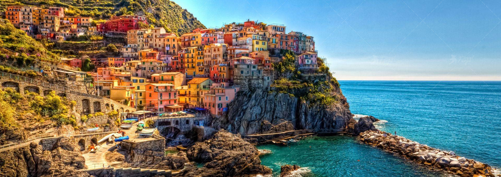
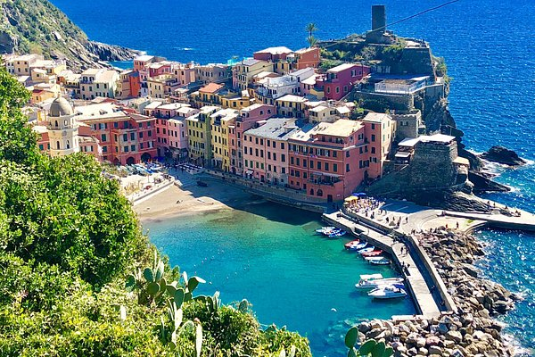
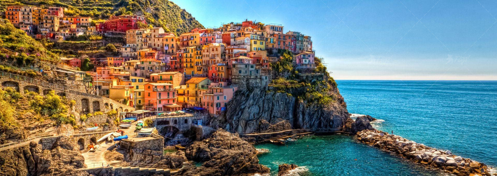
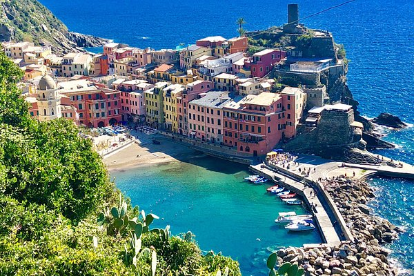

Прогулянка
Прогулянка від Монтероссо до Ріомаджоре займе у вас близько двох годин, виділіть час в залежності від погодних умов і вашої фізичної форми.
 Прогулянка від Монтероссо до Ріомаджоре займе у вас близько двох годин, виділіть час в залежності від погодних умов і вашої фізичної форми.
 Чінкве-Терре складається із п’яти сіл: Монтероссо, Вернацца, Корнілья, Манарола і Ріомаджоре.
На північному-заході стоїть Італійська Рив’єра, на північ від міста Спеція.
Прогулянка безплатна!